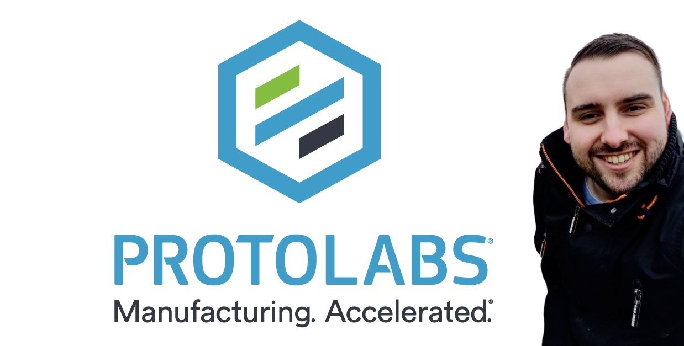

Shout out to our sponsors
- Zengenti - pizza
- Blue Boar - venue (wifi: sittingc1346x)
- JetBrains - licenses
- .NET Foundation - meetup
Umbraco CMS with .Net
Monday, October 14, 2019
Callum Whyte on how to use open source Umbraco CMS from within a .Net app.
Infrastructure As Code
Monday, September 9, 2019
Ashley Poole from Shropshire Devs talking about Terraform by Hashicorp.
Debugging with Visual Studio
Monday, August 12, 2019

Philip Sutton from MK.NET will be joining us to talk about debugging in Visual Studio 2019.
Building a bot
Monday, July 8, 2019

MS Conversation Learner: an ML driven approach
with Ed Yau.